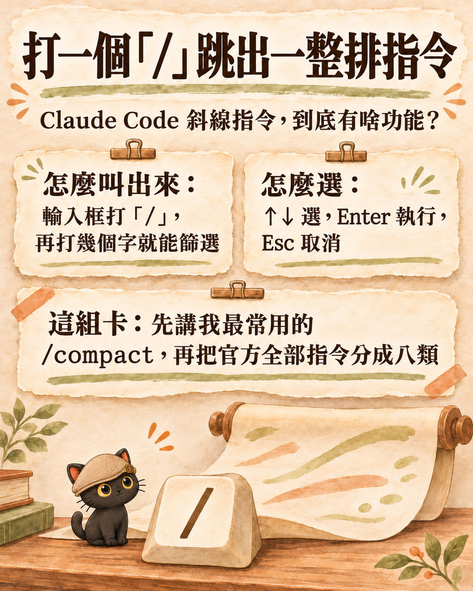
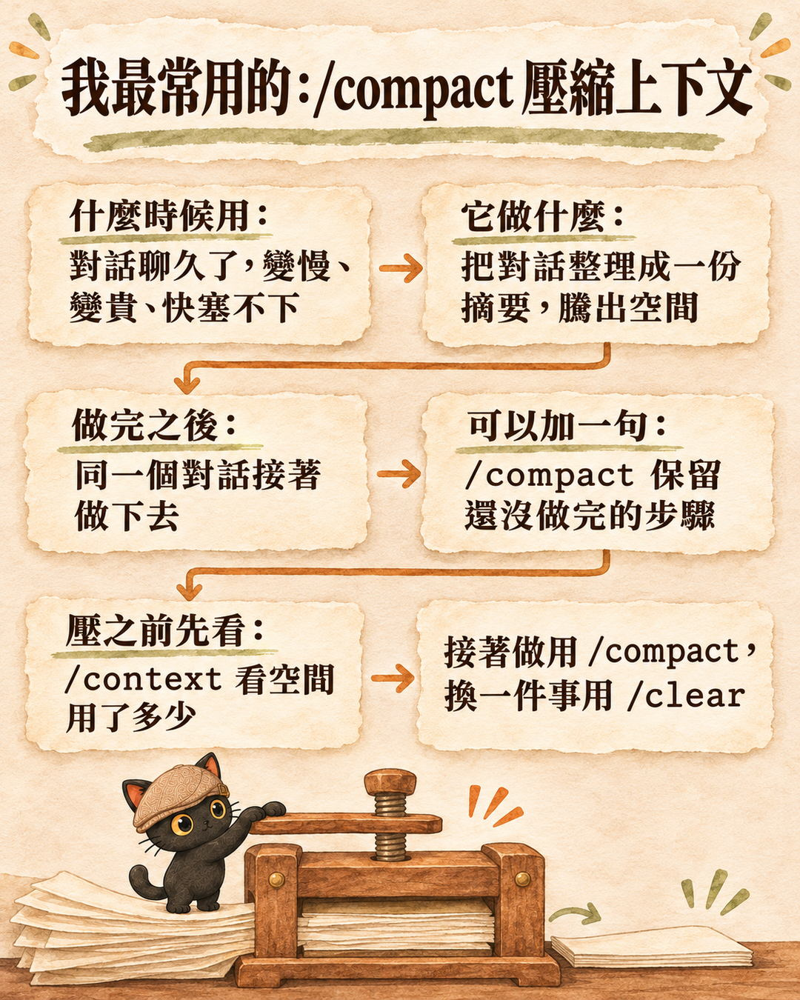
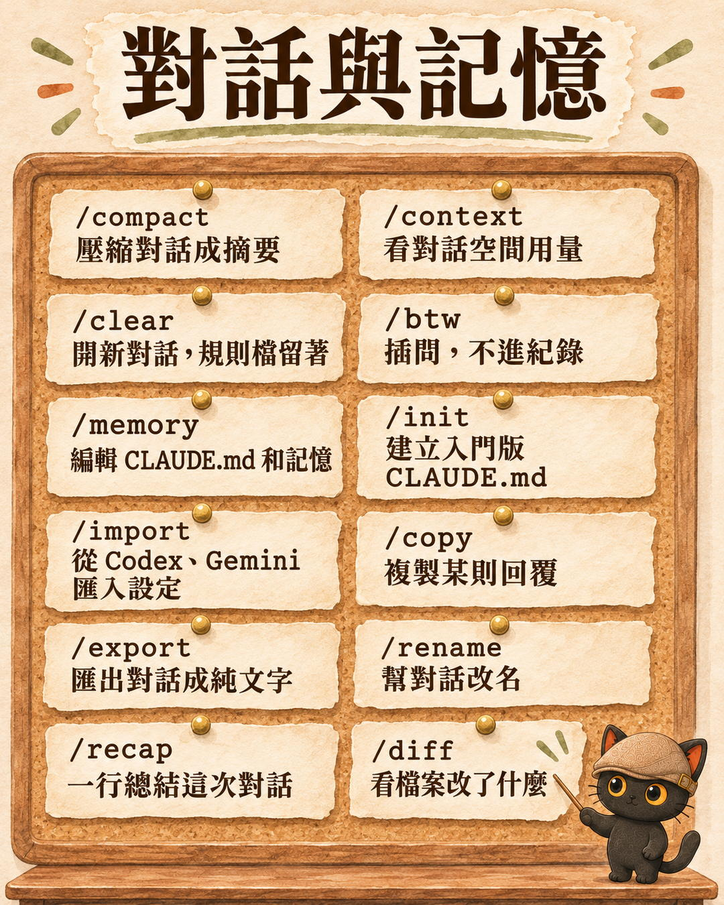
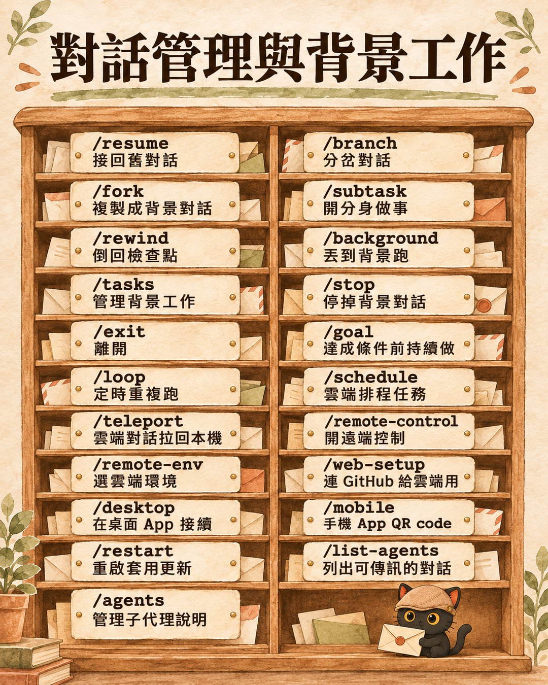
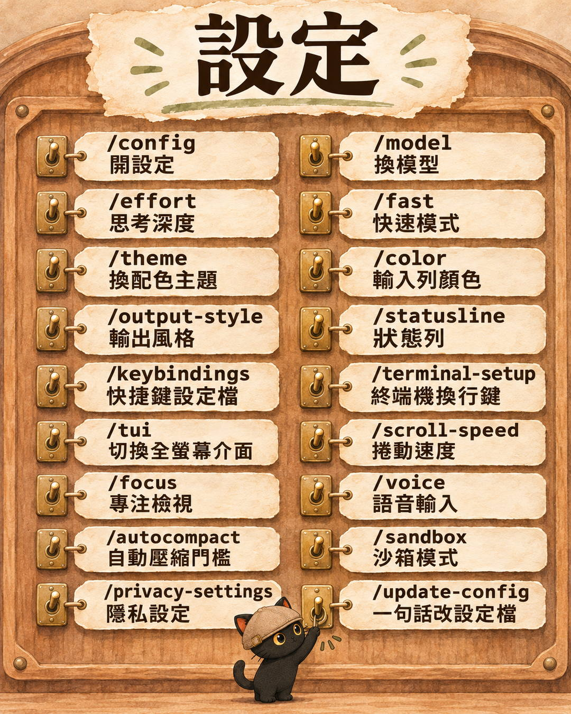
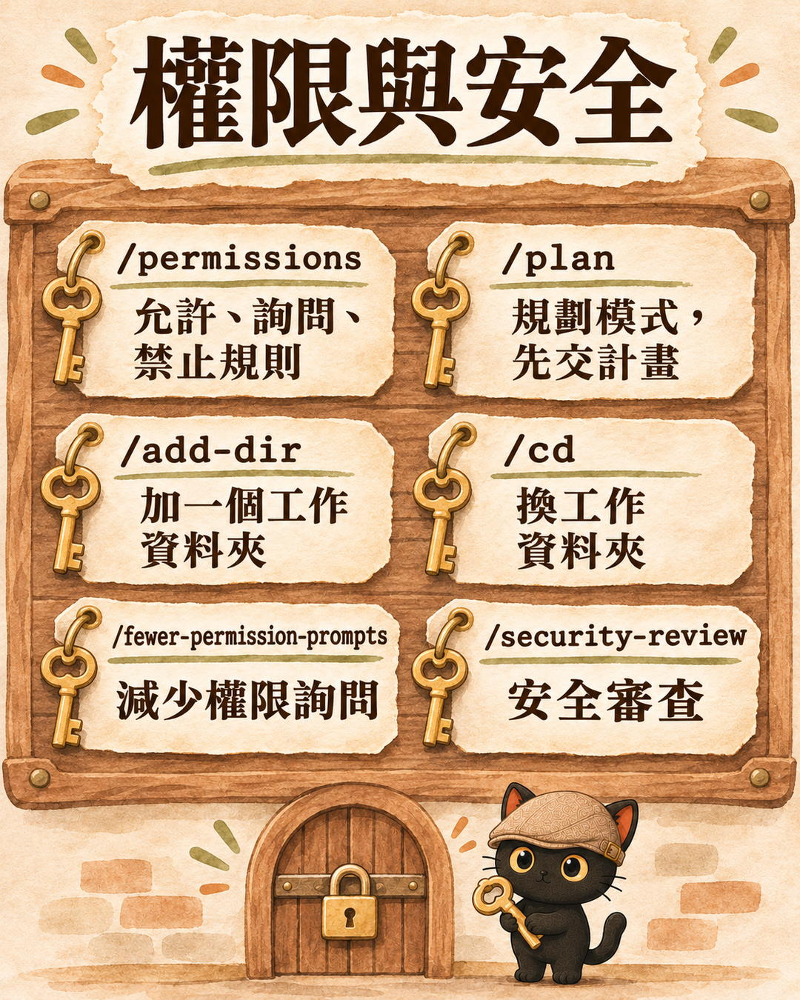
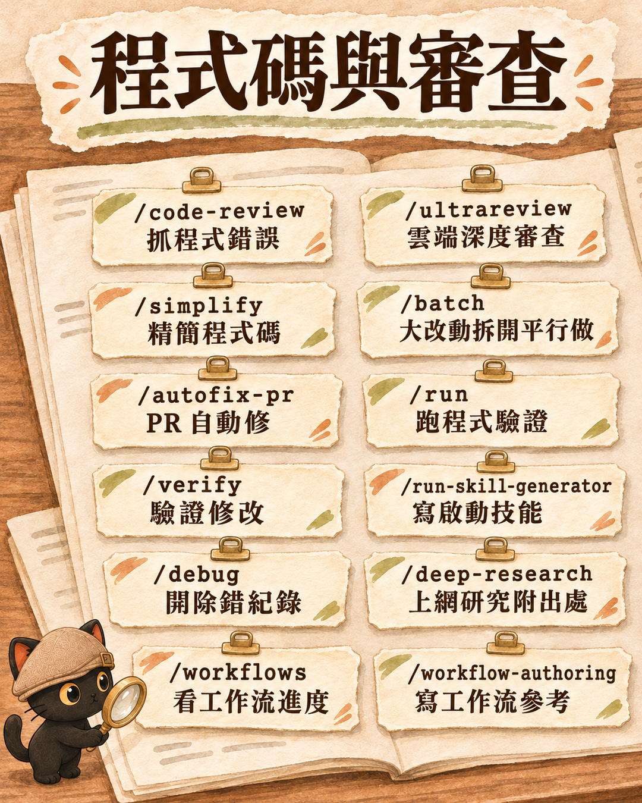
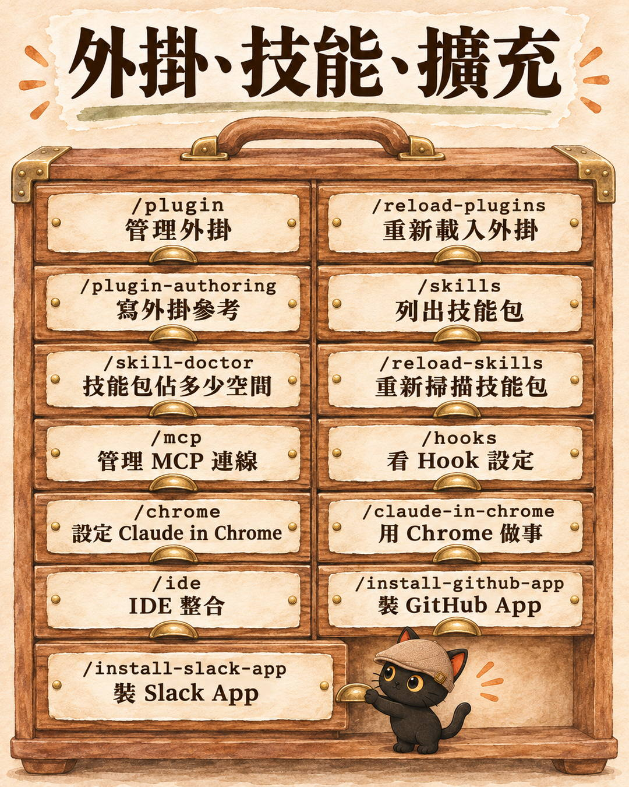
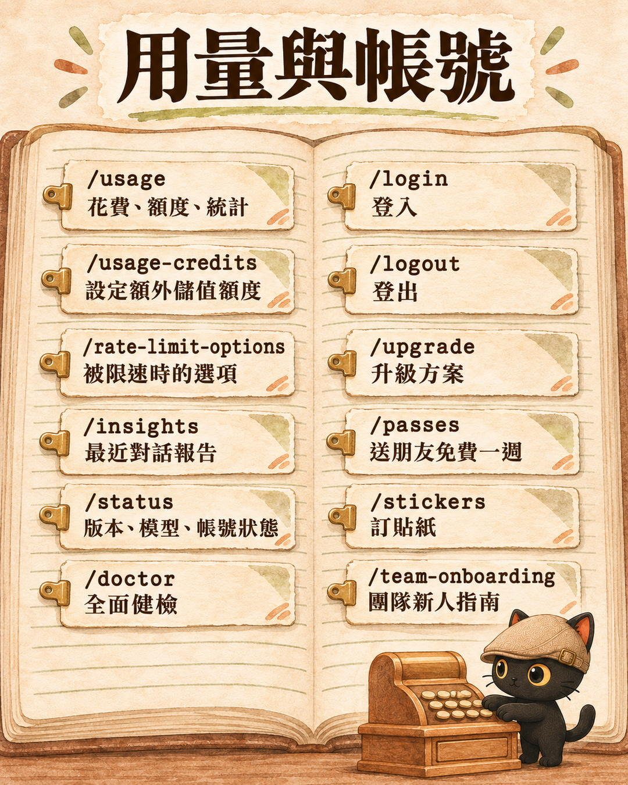
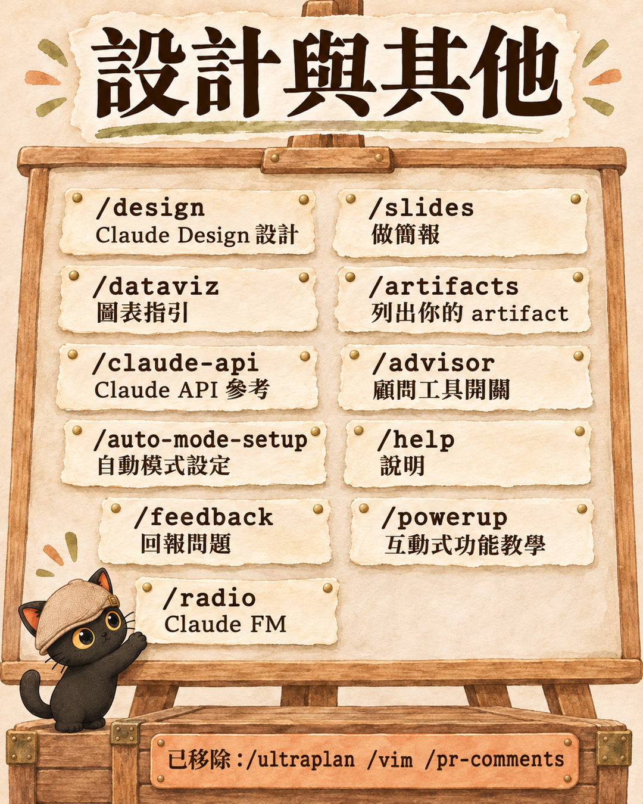

在 Claude Code 的輸入框打一個斜線「/」，會跳出一整排英文指令。這篇對照官方文件，把它們整理成中文：先講怎麼叫出選單，再從我最常用的 /compact 講起，接著是省錢、防出錯、查額度這幾個最常用的，最後附官方全部指令的中文總表，要用時再查。
- 剛開始用 Claude Code（終端機或桌面 App），看到斜線選單一頭霧水的人
- 對話一聊久就變慢、變貴，想知道怎麼處理的人
- 要教學員或同事用 Claude Code，想要一份中文指令對照表的人
- 怎麼叫出選單、怎麼篩選
- /compact 怎麼用，跟 /clear 差在哪
- 省錢、防出錯、查額度的六個指令
- 一張「遇到什麼狀況打哪個」的小抄
- 官方全部指令的中文總表，和一段可以直接貼給 AI 的查詢句

打「/」之後跳出來的是 plugin、model、effort、fast、plan、permissions、skills、workflows、usage、stats……往下捲還有一大串。
我截圖問 AI：「這到底都有啥功能呀？」這篇就是我請 AI 對照 Claude Code 官方指令文件 整理出來的結果（2026 年 11 月 13 日查）。
Claude Code 是 Claude 的一種用法，可以直接在你的電腦上讀檔、改檔、跑程式；有終端機版，也有放在 Claude 桌面 App 裡的版本，兩邊都是打「/」叫出指令。
我最常用的 /compact：對話太長時，壓成一份摘要接著做

一個對話聊久了，AI 要記的東西越來越多，會變慢、變貴，最後塞不下。
/compact 做的事，是把目前的對話整理成一份摘要，騰出空間，對話可以接著做下去。
它後面可以接一句話，指定摘要要保留什麼：
/compact 保留還沒做完的步驟
不接也可以，它會自己判斷要留哪些。
跟 /compact 常一起用的三個
| 指令 | 做什麼 | 跟 /compact 的差別 |
|---|---|---|
/context | 用彩色格子顯示對話空間用了多少，還會給建議 | 壓縮前先看要不要壓 |
/clear | 清空這次聊天的內容，重新開始；你寫在規則檔（CLAUDE.md）裡的固定設定不會不見 | /compact 留摘要接著做，/clear 整個重來 |
/btw 問題 | 插問一個旁支問題，不會進對話紀錄 | 不想讓小問題佔空間時用 |
接著做還是重開：/compact 跟 /clear 差在哪
判斷方式很簡單：還要接著做，就 /compact；換一件事做，就 /clear。
/clear 之後，舊對話不會不見，之後還可以用 /resume 接回來。
壓縮之前，可以先打 /context 看看用了多少；只是想順口問一個小問題，用 /btw，答案不會塞進對話裡佔空間。
- 離開超過一小時回來，AI 對話為什麼變貴？｜我用 Claude Code Mod 做了閒置 55 分鐘先寫日誌再自動壓縮 這一段只講手動打 /compact，那篇講為什麼離開一小時回來會變貴，和我怎麼讓它先寫日誌再自動壓縮
省錢的兩個旋鈕：/model 和 /effort
| 指令 | 白話 | 怎麼用 |
|---|---|---|
/model | 找誰做：換模型，並存成預設 | 日常雜事用便宜一點的模型（例如 Sonnet、Haiku），難的企劃用最強的（例如 Opus） |
/effort | 想多認真：low、medium、high、xhigh、max，或 auto | 簡單問題調低；寫企劃、除錯調高。max 只在這次對話有效 |
在 /model 的選單裡按左右鍵，也可以順便調 effort。可選的等級依模型不同，有些模型沒有 xhigh。
趕時間的 /fast，要先知道怎麼算錢
/fast 是同一個模型，速度最快到 2.5 倍，每個 token 的價格比較高。要注意：訂閱方案（Pro、Max 這些）用快速模式時，只從額外儲值的額度扣，不吃方案內的額度；沒有開儲值就不能用。額外儲值是在 Claude 帳號設定裡另外開的超額用量（usage credits），不用另外申請 API 帳號。再打一次 /fast 就關掉。
- 用 AI 解決一件事，花的錢值不值得？｜我做了一個 Token 精算師，把每月用量換成台幣 這一段只講旋鈕在哪，那篇把用量換成台幣，算一件事值不值得
怕 AI 衝太快：/plan 先交計畫再動手
開了規劃模式之後，AI 會先看資料、排步驟，最後交一份計畫給你；在你點頭之前，它不會動手改你的檔案。計畫出來後有三個選擇：同意並讓它自動做、同意但每次修改都要你批准、繼續規劃。
後面可以直接接任務，例如：
/plan 幫我整理桌面上的截圖資料夾
適合用在大改動之前：搬資料夾、大批改名、改設定，或你自己也還沒想清楚要怎麼做的時候。
做錯了也能倒回去：/rewind
/rewind 可以把對話、改過的檔案，或兩個一起，倒回之前的檢查點（也可以打 /undo）。
要注意：它救得回來的，是 Claude 用編輯功能改的檔案。如果是讓 AI 跑指令去搬移、刪除檔案，不一定能靠它復原，重要資料先備份。
| 旁邊幾個救回、分岔用的 | 做什麼 |
|---|---|
/resume | 接回之前的對話 |
/branch | 從這裡分岔，試另一個方向 |
/background | 把這個對話丟到背景繼續跑 |
查額度、做健檢：/usage 和 /doctor
| 指令 | 做什麼 |
|---|---|
/usage | 這次對話花了多少、方案額度還剩多少、使用統計，三個合在一起。打 /cost、/stats 也會打開它 |
/doctor | 健檢 Claude Code 的安裝、設定、外掛和規則檔（CLAUDE.md），找到問題後你確認了才幫你修 |
/skill-doctor | 列出每個技能包佔多少對話空間、多常被用到，幫你找出可以關掉的技能包 |
一張小抄：遇到什麼狀況，打哪個指令
| 狀況 | 打這個 |
|---|---|
| 對話太長、變慢 | /compact |
| 換一件事做 | /clear |
| 想省錢 | /model 換便宜一點的模型，/effort 調低 |
| 趕時間 | /fast（訂閱方案扣儲值額度） |
| 大改動怕出事 | /plan |
| 改壞了 | /rewind |
| 額度還剩多少 | /usage |
| 東西怪怪的 | /doctor |
| 技能包太多、太佔空間 | /skill-doctor |
看不懂某個指令時，把這句話貼給你的 AI
請查 Claude Code 官方指令文件 https://code.claude.com/docs/en/commands ，用白話告訴我「/指令名稱」是做什麼的、什麼時候用、有沒有要注意的費用或限制。不要憑印象回答。
Claude Code 官方全部指令中文總表（要用時再查，人可以跳過）
以下依 官方指令文件 整理（2026 年 11 月 13 日查），括號內是別名。標「技能」的是 Claude Code 內建的技能包，用起來跟指令一樣。指令會隨版本增減，以你自己打「/」看到的為準。

對話與記憶
| 指令 | 做什麼 |
|---|---|
/compact [指示] | 壓縮對話成摘要 |
/context | 看對話空間用量 |
/clear（/reset /new） | 開新對話，保留專案記憶 |
/btw [問題] | 插問，不進紀錄 |
/memory | 編輯 CLAUDE.md 和自動記憶 |
/init | 建立入門版 CLAUDE.md |
/import | 從 Codex、Gemini、Cursor 匯入設定 |
/copy [N] | 複製某則回覆 |
/export | 匯出對話成純文字 |
/rename | 幫對話改名 |
/recap | 一行總結這次對話 |
/diff | 看檔案改了什麼 |
對話管理與背景工作
| 指令 | 做什麼 |
|---|---|
/resume（/continue） | 接回舊對話 |
/branch | 分岔對話 |
/fork | 複製對話成新的背景對話 |
/subtask | 開分身做事，結果回到這裡 |
/rewind（/checkpoint /undo） | 倒回檢查點 |
/background（/bg） | 丟到背景跑 |
/tasks（/bashes） | 管理背景工作 |
/stop | 停掉背景對話 |
/exit（/quit） | 離開 |
/goal | 設定條件，達成前持續做 |
/loop（技能） | 定時重複跑 |
/schedule（/routines） | 雲端排程任務 |
/teleport（/tp） | 把雲端對話拉到終端機 |
/remote-control（/rc） | 開遠端控制 |
/remote-env | 選預設雲端環境 |
/web-setup | 連 GitHub 給雲端對話用 |
/desktop（/app） | 在桌面 App 接續 |
/mobile | 顯示手機 App 的 QR code |
/restart（/update） | 重啟套用更新 |
/list-agents（/peers） | 列出可以傳訊息的分身和對話 |
/agents | 提醒怎麼建立、管理子代理 |


設定
| 指令 | 做什麼 |
|---|---|
/config（/settings） | 開設定 |
/model | 換模型 |
/effort | 思考深度 |
/fast | 快速模式 |
/theme | 換配色主題 |
/color | 輸入列顏色 |
/output-style | 輸出風格 |
/statusline | 狀態列 |
/keybindings | 快捷鍵設定檔 |
/terminal-setup | 終端機換行快捷鍵（只限終端機） |
/tui | 切換全螢幕介面 |
/scroll-speed | 捲動速度（只限全螢幕） |
/focus | 專注檢視（只限全螢幕） |
/voice | 語音輸入 |
/autocompact | 設定自動壓縮的門檻 |
/sandbox | 沙箱模式 |
/privacy-settings | 隱私設定 |
/update-config（技能） | 用一句話改設定檔 |
權限與安全
| 指令 | 做什麼 |
|---|---|
/permissions（/allowed-tools） | 允許、詢問、禁止的規則 |
/plan | 規劃模式 |
/add-dir | 加一個工作資料夾 |
/cd | 換工作資料夾 |
/fewer-permission-prompts（技能） | 減少權限詢問 |
/security-review | 安全審查 |


程式碼與審查
| 指令 | 做什麼 |
|---|---|
/code-review（/review） | 抓程式錯誤；加 ultra 是雲端深度審查 |
/ultrareview | 舊名，建議改用 /code-review ultra |
/simplify（技能） | 精簡程式碼，不抓錯誤 |
/batch（技能） | 大改動拆成 5 到 30 份平行做 |
/autofix-pr | PR 測試沒過或有人留言時自動修 |
/run、/verify（技能） | 實際跑程式驗證修改 |
/run-skill-generator（技能） | 為專案寫啟動技能 |
/debug（技能） | 開除錯紀錄 |
/deep-research | 多路上網研究，附出處的報告 |
/workflows | 看多代理工作流進度 |
/workflow-authoring（技能） | 寫工作流的參考 |
外掛、技能、擴充
| 指令 | 做什麼 |
|---|---|
/plugin | 管理外掛 |
/reload-plugins | 重新載入外掛 |
/plugin-authoring（技能） | 寫外掛的參考 |
/skills | 列出技能包 |
/skill-doctor | 技能包佔多少空間、使用率 |
/reload-skills | 重新掃描技能包 |
/mcp | 管理 MCP 連線 |
/hooks | 看 Hook 設定 |
/chrome | 設定 Claude in Chrome |
/claude-in-chrome（技能） | 用 Chrome 做網頁任務 |
/ide | IDE 整合 |
/install-github-app | 裝 GitHub App |
/install-slack-app | 裝 Slack App |


用量與帳號
| 指令 | 做什麼 |
|---|---|
/usage（/cost /stats） | 花費、額度、統計 |
/usage-credits | 設定或申請額外儲值額度 |
/rate-limit-options | 被限速時的選項 |
/insights | 最近對話的 HTML 報告 |
/status | 版本、模型、帳號、連線狀態 |
/doctor（/checkup） | 全面健檢 |
/login、/logout | 登入、登出 |
/upgrade | 升級方案 |
/passes | 送朋友免費一週（有資格才有） |
/stickers | 訂貼紙 |
/team-onboarding | 產生團隊新人指南 |
設計與其他
| 指令 | 做什麼 |
|---|---|
/design 系列 | Claude Design 設計工具 |
/slides（技能） | 做簡報 |
/dataviz（技能） | 圖表指引 |
/artifacts | 列出你的 artifact |
/claude-api（技能） | Claude API 參考 |
/advisor | 顧問工具開關 |
/auto-mode-setup | 自動模式環境設定 |
/help | 說明 |
/feedback（/bug /share） | 回報問題 |
/powerup | 互動式功能教學 |
/radio | Claude FM |

已移除，或官方文件沒寫
| 指令 | 狀態 |
|---|---|
/ultraplan | 已移除，改用 /plan |
/vim | 已移除，改到 /config 設定 |
/pr-comments | 已移除 |
/storage | 我的桌面 App 選單裡有，但官方指令文件沒有這一條，用途不確定前先別依賴它 |
幾個要知道的邊界：
- 官方文件沒有逐條寫哪些指令在桌面 App 能用。桌面 App 的說明頁 只點名 /code-review、/context、/compact、/btw、/remote-control。
- 選單的排列順序官方也沒寫，你看到的順序可能跟我的不一樣。
- 離開超過一小時回來，AI 對話為什麼變貴？｜我用 Claude Code Mod 做了閒置 55 分鐘先寫日誌再自動壓縮 /compact 的自動版
- 用 AI 解決一件事，花的錢值不值得？｜我做了一個 Token 精算師，把每月用量換成台幣 調 /model、/effort 之前，先算一件事值多少
- AI 自己跑，會不會一直跑到額度燒完？｜迴圈的圈數上限，三行寫進規則檔 往後：用 /loop、/goal 讓 AI 自己跑之前，先設上限
- Claude Code Mod 做任務佇列｜一次交代 AI 好幾件事，對話旁看得到還剩什麼 往後：指令不夠用時，自己做一個 Mod
每個月兩場免費線上講座
主題輪流，場次會先在 LINE 社群公布。
場次在 LINE 社群公布。